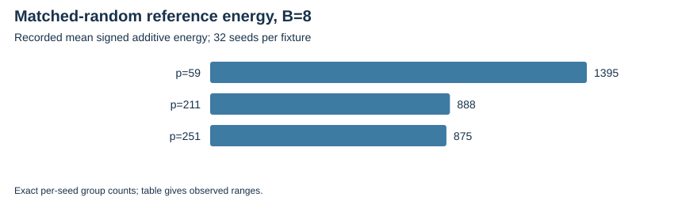

TWIST ROUTES 1–3 · E22 · 2026-10-23 · LOCAL BOUNDED EVIDENCE
The native assessment recomputes every recorded signed pair/triple histogram and additive energy, including 960 matched random-base controls. Distinct projected bases are deduplicated across configurations.
Duplicating every lift twice multiplies the weighted energy by 16 while adding zero new projected rows. That factor is an algebraic multiplicity calculation, not a measured rank gain. Energy alone is not a collector or a speed result.
| Fixture, B=8 | Independent public random seeds | Energy min | Energy max | Recorded mean |
|---|---|---|---|---|
| p=59 | 32 | 1288 | 1600 | 1395 |
| p=211 | 32 | 760 | 1112 | 888 |
| p=251 | 32 | 768 | 992 | 875 |

Full independent row-span/yield controls, shuffled and interval-like controls, frozen structural selection and complete collector costs remain open.
Verified locally on the same host; complete raw publication is pending artifact-store access. No calibrated speedup, novelty, independent-host replay or NIST DLP is claimed. Original acceptance criteria remain open.
Rust 1.90.0, PARI/GP 2.17.2, one worker except the three-cell E25 orchestration; isolation L0. Caps and limits are in each source-frozen protocol and receipt. Counts are exact finite records; no wall time is admitted. Stochastic uncertainty is not inferred from repeated configurations or targets.
| Receipt / phase | UTC start | Exit | Source pin |
|---|---|---|---|
| coupled-energy-20261023-v1.json | 2026-10-23T02:13:49Z | 0 | 2ea22cb8a2d4 |
Native assessment: ../../execution-v2/assessment-20261023-v3/ASSESSMENT.json. Raw members: runs/coupled-energy-20261023-v1 (all 1,245 diagnostic/control entries). Source/input/binary hashes and exact argv: E22-receipts.json and ../../execution-v2/receipts/.